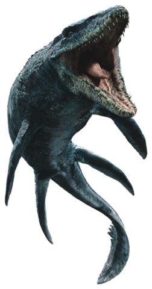
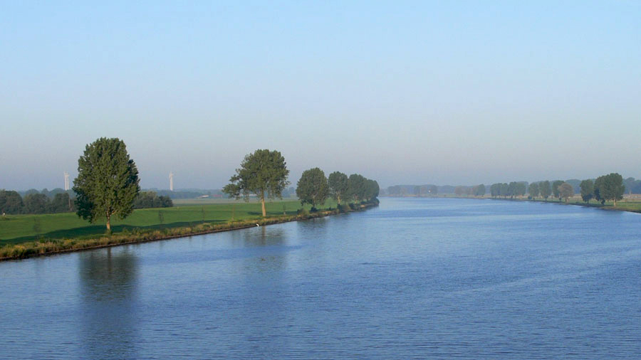

Fact number one:
Did you know that the Mosasaurus was found in the river the Meuse (De Maas)?
After all it is named after it.

Fact number two:
Do you know where the old City of Maaseik gets its name from?
Well let me tell you ...
Legend has it that there was an Oak growing in the Meuse River and that is why it is called Maas-Eik.
